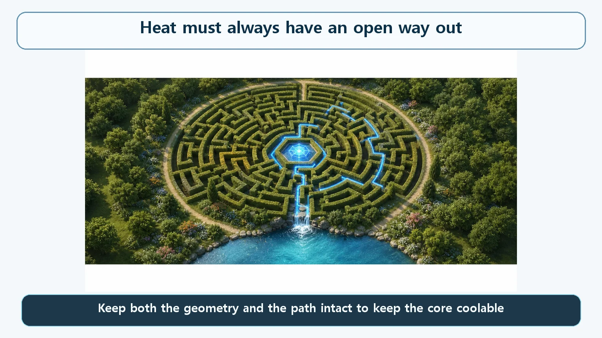
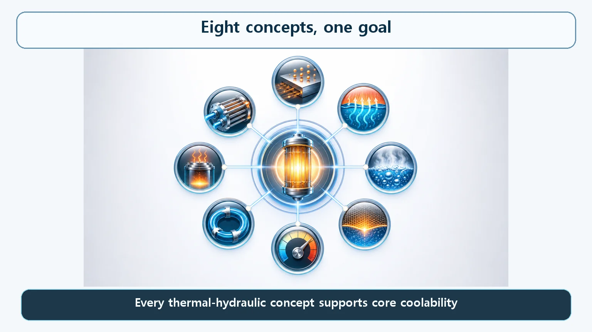

Heat Transfer & Thermal Hydraulics · 150
Even in a Maze, One Door Must Always Lead Out — Core Coolability as a Safety Goal
Conduction, boiling, circulation, decay heat and heat sinks all answer one question: what does it take to keep a way out for the core's heat always open?
Core coolability is the safety goal that, in normal operation and in any accident, the core's heat always has at least one way out. That takes two things at once: an intact geometry of fuel and coolant, and an unbroken path for the heat to the outside. Every heat transfer and thermal-hydraulics concept in a reactor serves this one goal.
Trapped in a maze, only one thing really matters
We've walked through how heat is made in a reactor, how it moves and where it finally has to go: out of the fuel, into the coolant, through boiling that can be both good and bad, around loops that can circulate even without pumps, long after shutdown, and finally out of the plant. All of it points to a single goal: core coolability.
Imagine standing in the middle of a complicated maze, full of twisting passages, dead ends and routes walled off partway. What matters most? Not how pretty it is or how many passages it has, but this: right now, is at least one way out still open? If just one passage runs unblocked to the exit, you can get out; if a thousand passages are all blocked, the maze is a trap.
A reactor core is in exactly this position. Heat keeps being produced at its heart, by fission and, even after shutdown, by residual heat (decay heat). If that heat stays trapped and builds up, the fuel and its cladding will eventually be damaged. So reactor designers make it their most fundamental goal that, in normal operation and in any accident or abnormal situation, at least one way out for the core's heat is always open.

Geometry and path both have to stay open
For a way through a maze to be open, the passage must not collapse, and it must actually run all the way to the exit. Core coolability demands the same two things.
Geometry. The fuel rods and the coolant between them must keep their designed spacing and arrangement, so coolant reaches every part of the fuel surface. If the fuel deforms or melts and clumps together, the surface the coolant needs to touch disappears. Good heat transfer inside the fuel, from the center through the cladding to the coolant, keeps this geometry from getting too hot.
Path. Once the coolant picks up heat, it must carry it all the way out of the reactor, ultimately to a place in nature that can take it. If that journey breaks midway, the heat just circulates inside the system, however much coolant there is. The coolant must actually move, pushed by pumps or circulating on its own through temperature differences, and the path is complete only with a final connection that dumps the heat outside.
The two are hard to separate: a collapsed geometry narrows or blocks the flow passages, and a blocked path lets the fuel overheat until the geometry collapses. Making both hold together, in normal operation and under every assumed accident, is the central task of reactor safety design.
Every concept so far was a piece of this one maze
| Concept | Role in the maze |
|---|---|
| Conduction inside the fuel | Keeps the passage walls from caving in (geometry) |
| Convection, boiling, heat transfer coefficient | How well the passage carries heat |
| Critical heat flux, DNB, thermal margin | Signposts for where the passage could suddenly close, and how far away that is |
| Operating pressure (pressurized vs boiling water reactors) | Design choice setting the conditions under which the passage stays open |
| Forced and natural circulation | The power that keeps the flow moving through the passage |
| Residual (decay) heat | Why the passage must stay open long after shutdown |
| Heat exchangers and the final heat sink | The passage must run all the way outside the maze |
Each topic seemed to explain a different phenomenon, but every one was answering the same question: what does it take to keep this passage always open?

The rate of heat removal, written very simply
Without complicated equations, the goal can be written as one relation:
Heat produced in the core ≤ heat that can actually be removed at that moment
That this inequality must always hold is the essence of core coolability. The left side depends on how active fission is and how long ago the reactor shut down (the size of the residual heat); the right side depends on how well geometry and path are holding up. As long as the right side stays greater than or equal to the left, the core is safe. If at any moment the left side exceeds the right, heat starts to accumulate and the geometry is put at risk. Much of what designers and operators do comes down to making sure this inequality never breaks.
Common points of confusion
"If there's water, cooling is taken care of." No. If the water just sits there and doesn't flow, or doesn't properly contact the fuel surface, its presence won't get the heat out. Real cooling needs both geometry and path.
"A loss-of-coolant accident and losing coolability are the same." A loss-of-coolant accident (LOCA) is a specific accident in which coolant leaks out of the system, closer to a cause. Loss of coolability is the broader state in which geometry or path has collapsed, for whatever reason, closer to a result. And coolability is not only an accident concern; it must always hold, even in normal operation.
The one-line takeaways
- Core coolability: in normal operation and any accident, at least one geometry and path for the core's heat must always stay open.
- Geometry means the fuel and coolant arrangement holds; path means the heat travels unbroken to where it can be released. The two are interlocked.
- Conduction, convection, boiling, critical heat flux, thermal margin, circulation, residual heat and heat exchange all support this one goal.
- In short: keep "heat produced in the core ≤ heat that can be removed at that moment" true at all times.
- Coolant alone, or thermal margin alone, doesn't complete coolability, and a LOCA is not the same as loss of coolability.